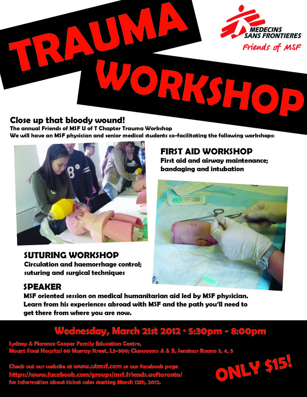

It is only a few weeks away until the last day of classes and it is hard to believe how fast this school year has gone by. The Friends of MSF UofT Chapter has had another fantastic year and it would not have been possible without the support of all our dedicated members. With that said, we are inviting all of you to apply for a position in our 2012-2013 Executive Committee. If you are passionate about advocating for global health and humanitarianism, joining our executive team would be a great opportunity for you to get involved, learn, and grow.
If you are interested in applying, please download and fill out the application form by using the link below. Please send your completed application to msf.friends.uoftoronto@gmail.com with the subject 'Exec Application' by Wednesday, March 28 11:50pm.
We look forward to receiving your application!
Download the application form.
Trauma Workshop - March 21 - 5:30 - 8:00pm @ Mount SinaiView the event poster here! Close up that bloody wound! The annual Friends of MSF U of T Chapter Trauma Workshop at will be on March 21st 2012 from 5.30 PM to 8:00PM at the Cooper Medical Education Center at Mount Sinai. We will have an MSF physician and several senior medical students co-facilitating the workshops. Participants will be split into 3 smaller groups and each group will rotate through the following stations with the objective of learning the basics of resuscitation: Station 1: First aid and Airway maintenance; bandaging and intubation Station 2: Circulation and haemorrhage control; suturing and surgical techniques Station 3: MSF oriented session on medical humanitarian aid led by MSF physician. Learn from his experiences abroad with MSF and the path you’ll need to get there from where you are now. COST: $15 WHEN: Wednesday March 21st · 5:30pm - 8:00pm
WHERE: Sydney & Florence Cooper Family Education Centre, Mount Sinai Hospital
Further information on ticket sales will be provided in the near future so please check back soon. |  |
Thank you to everyone who attended our speaker event, "Humanitarianism: Why Should I Care?" We hope you found the discussion educational and inspiring to becoming more globally engaged! For more information about MSF Canada and how to one day work for the organization, please visit www.msf.ca.
{kind=link}